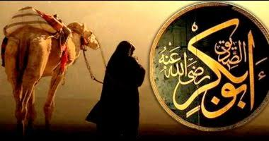

أبو بكر الصديق
هو عبد الله بن أبي قحافة عثمان بن كعب التيمي القرشي، وكنيته أبو بكر أمه أم الخير سلمى بنت صخر بن عامر التيمي، ولد سنة 51 ق.هـ (573م) أول من آمن برسول الله صلى الله عليه وسلم من الرجال، وأول الخلفاء الراشدين، سمي بالصديق لأنه صدق النبي صلى الله عليه وسلم في خبر الإسراء، وقيل لأنه كان يصدق النبي صلى الله عليه وسلم في كل خبر يأتيه من السماء، كان يدعى بالعتيق، لأن النبي صلى الله عليه وسلم قال له: يا أبا بكر أنت عتيق الله من النار، كان سيداً من سادات قريش وغنياً من كبار موسريهم، وكان ممن حرم الخمر على نفسه في الجاهلية. كانت له في عصر النبوة مواقف كبيرة، فشهد الحروب واحتمل الشدائد وبذل الأموال، وكان رفيق النبي صلى الله عليه وسلم في هجرته إلى المدينة وإليه عهد النبي صلى الله عليه وسلم بالناس حين اشتد به المرض، بويع بالخلافة يوم وفاة النبي صلى الله عليه وسلم سنة 11 للهجرة، حارب المرتدين والممتنعين عن أداء الزكاة وأقام دعائم الإسلام. افتتحت في أيامه بعض بلاد الشام والعراق، توفي ليلة الثلاثاء لثمان خلون من جمادى الآخرة وهو ابن ثلاث وستين سنة، وكانت مدة خلافته سنتين وثلاثة أشهر ونصفاً.